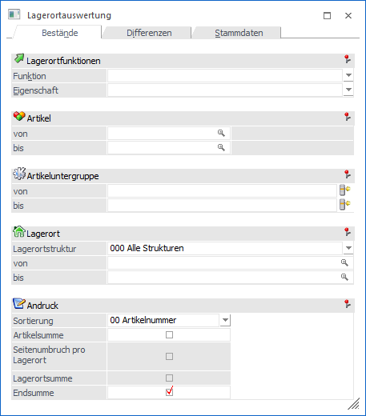
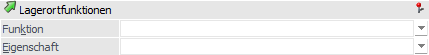
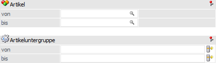
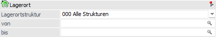
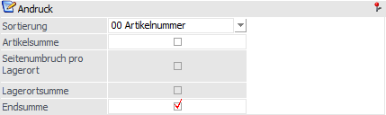

In dem Register "Bestände" können die Bestände pro Lagerort ausgewertet werden.
Hinweis
Der in der Auswertung ebenfalls dargestellte Lagerortwert wird immer zur Laufzeit berechnet (Bestand x aktueller Einstandspreis).

Lagerortfunktionen

Über den Bereich "Lagerortfunktionen" können nach Lagerortfunktionen und Eigenschaften der Lagerorte selektiert werden.
Hinweis
Innerhalb der ausgewählten Funktionen bzw. Eigenschaften erfolgt eine ODER-Verknüpfung. Die beiden Elemente "Funktion" und "Eigenschaft" werden hingegen mit einer UND-Verbindung verknüpft.
Beispiele
ü Bei der Funktion wird "Warenausgangslager" und "Wareneingangslager" ausgewählt und die Eigenschaft bleibt leer. Somit werden alle Lagerorte mit Bestand ausgegeben, die entweder Warenausgangslager oder Wareneingangslager oder beides hinterlegt haben.
ü Die Funktion bleibt leer und bei den Eigenschaften wird z.B. "Kühllager" und "Trockenlager" per Checkbox ausgewählt. Somit werden alle Lagerorte mit Bestand ausgegeben, die entweder Kühllager oder Trockenlager oder beides hinterlegt haben.
ü Bei der Funktion wird "Warenausgangslager" und bei den Eigenschaften wird "Kühllager" und "Trockenlager" ausgewählt. Nun werden alle Lagerorte mit Bestand, die entweder Warenausgangslager UND Kühllager oder Warenausgangslager UND Trockenlager hinterlegt haben, ausgegeben.
Ø Funktion
Hier ist die Auswahl einer oder mehrerer Lagerortfunktionen per Auswahlbox möglich. Bei Auswahl mehrerer Funktionen werden diese mit der ODER-Verknüpfung angewendet.
Ø Eigenschaft
Hier ist die Auswahl einer oder mehrerer Eigenschaften per Auswahlbox möglich. Bei Auswahl mehrerer Eigenschaften werden diese mit der ODER-Verknüpfung angewendet.
Weitere Selektionen

Ø Artikel von / bis
An dieser Stelle kann nach den Artikeln eingeschränkt werden, welche ausgewertet werden sollen. Bleiben die Felder leer, so werden alle Artikel in die Auswertung einbezogen.
Ø Artikeluntergruppe von / bis
An dieser Stelle kann nach den Artikeluntergruppen eingeschränkt werden. Bleiben die Felder leer, so werden alle Artikel aller Artikeluntergruppen in die Auswertung einbezogen.
Lagerort

In diesem Bereich können die auszuwertenden Lagerorte selektiert werden.
Ø Lagerortstruktur
In dem Feld "Lagerortstruktur" kann mit Hilfe einer Auswahlliste die auszuwertende Struktur gewählt werden. Durch Auswahl einer Struktur steht der auszuwertende Lagerortbereich fest und die nachfolgenden Felder ("Lagerort von / bis") stehen für eine Eingabe nicht zur Verfügung.
Ø Lagerort von / bis
An dieser Stelle können der auszuwertende Lagerort bzw. der Lagerortbereich über eine "von / bis"-Selektion angegeben werden.
Hinweis
Wird in dem Feld "von Lagerort" ein Ort angegeben, welcher nicht der letzten Hierarchie-Ebene entspricht, so wird in das Feld "bis Lagerort" automatisch der letzte Lagerort der darunterliegenden Hierarchie-Ebenen eingetragen.
Andruck

In diesem Bereich können diverse Einstellungen für die Ausgabe getroffen werden. Alle Summen- und Umbruchsfunktionen werden ausschließlich bei den Ausgabevariante "Ausgabe Bildschirm" und "Ausgabe Drucker" berücksichtigt.
Ø Sortierung
An dieser Stelle kann die Sortierung für die Ausgabe eingestellt werden. Hierfür stehen folgende Einstellungen zur Verfügung:
ü 00 - Artikelnummer
ü 01 - Lagerort
Ø Artikelsumme
Durch Aktivierung dieser Option wird nach dem Artikel die Summe des Bestands, des Bestands2 und des Werts angezeigt. Die Artikelsummen können nur ausgegeben werden, wenn die Sortierung nach "00 - Artikelnummer" erfolgt.
Ø Seitenumbruch pro Lagerort
Wird mit der Sortierung "01 - Lagerort" gearbeitet, so kann durch Aktivierung dieser Option ein Seitenumbruch pro Lagerort erfolgen.
Ø Lagerortsumme
Wenn ein Seitenumbruch pro Lagerort erfolgen soll, so kann mit Hilfe dieser Option eine Summe pro Lagerort ausgegeben werden.
Ø Endsumme
Mit Hilfe dieser Option wird eine Endsumme über alle Artikel bzw. Lagerorte gebildet.